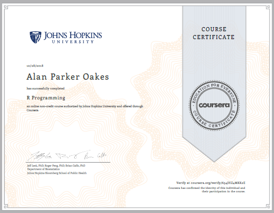
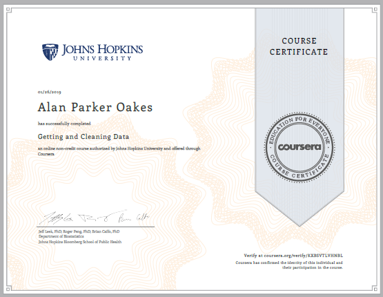
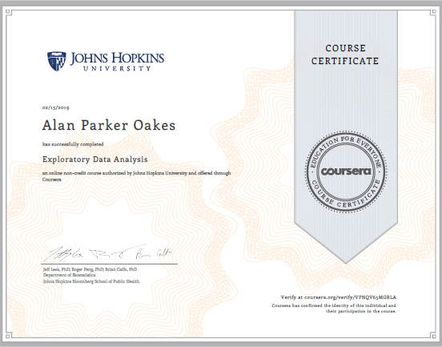
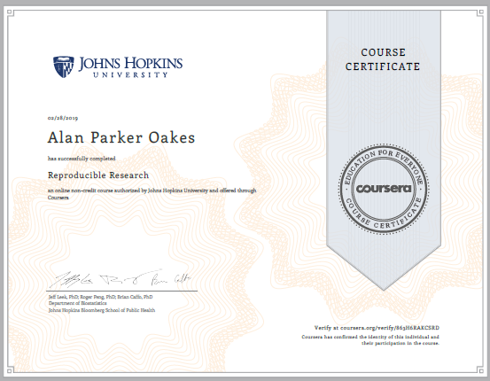

Education & Certifications
Education
Data Science Specialization
Coursera, Johns Hopkins University
A ten-course data science specialization developed and taught by professors of Johns Hopkins Bloomberg School of Health.
Associates of Science
Southwest Tennessee Community College
General Studies; Cum Laude, 3.49 GPA.
Certifications



